Research
"Quasi-globally Optimal and Efficient Vanishing Point Estimation in Manhattan World",
ICCV
, 2019
Oral presentation (4.3% acceptance rate)
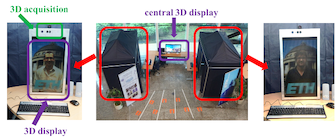
"Globally Optimal Inlier Set Maximization for Atlanta Frame Estimation"
CVPR
, 2018
Oral presentation (4.3% acceptance rate)
"Globally Optimal Inlier Set Maximization for Atlanta Frame Estimation"
CVPR
, 2018
Oral presentation (4.3% acceptance rate)
"Partial Sum Minimization of Singular Values in RPCA for Low-Level Vision"
ICCV
, 2013
Oral presentation (4.3% acceptance rate)
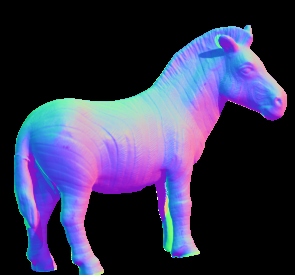
"Globally Optimal Inlier Set Maximization With Unknown Rotation and Focal Length"
ECCV
, 2014
Oral presentation (2.8% acceptance rate)
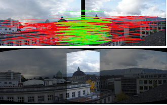
"A Branch and Bound Approach to Correspondence and Grouping Problems"
TPAMI
, 2013
Oral presentation (2.8% acceptance rate)
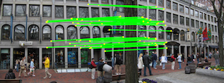
"Globally Optimal Consensus Set Maximization Through Rotation Search"
ACCV
, 2012
Oral presentation (3.6% acceptance rate)
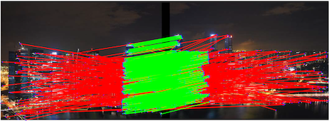
"Globally Optimal Line Clustering and Vanishing Point Estimation in Manhattan World"
CVPR
, 2012
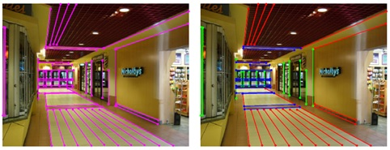
"FaceSyncNet: A Deep Learning-Based Approach for Non-linear Synchronization of Facial Performance Videos"
ICCV Workshop
, 2019
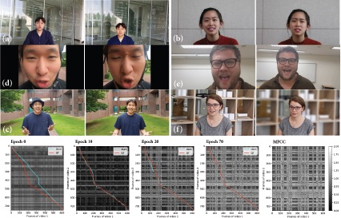
"Deep360Up: Deep Learning-Based Approach For Automatic VR Image Upright Adjustment"
IEEE VR
, 2019
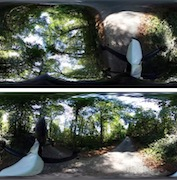
"DeepCalib: A Deep Learning Approach for Automatic Intrinsic Calibration of Wide Field-of-View Cameras"
CVMP
, 2018
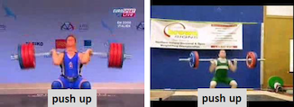
"Motion Based Remote Camera Control with Mobile Devices"
MobileHCI
, 2016 (24% acceptance rate)
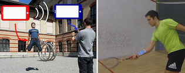
"FaceDirector: Continuous Control of Facial Performance in Video"
ICCV
, 2015
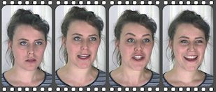
"Intrinsic decomposition of image sequences from local temporal variations"
ICCV
, 2015
"Efficient GPU Based Sampling for Scene-Space Video Processing"
VMV
, 2015
"Topology-aware Reconstruction of Thin Tubular Structures"
SIGGRAPH Asia Technical Briefs
, 2014